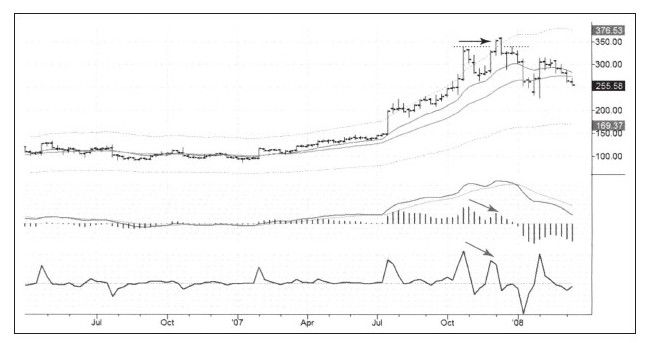
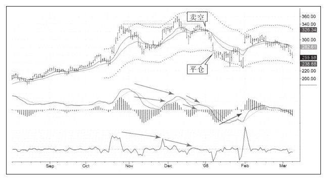

我做过的交易记录中一定包含信息来源，我要知道我是如何获得这条信息的，通过扫描市场、电子邮件抑或是其他方式。通过Spike交易集团获取信息是我的交易信息的重要来源之一，做空ISRG的信息就是从Spike最成功的员工之一戴夫那里获得的。
在计划一次交易时，我通常在长周期图表中（通常是周线）制定战略决策，并在短周期图表（通常是日线）中制定战术决策。如图9-6所示，ISRG的周线走势图表现出一个强烈做空信号和两个折中信号，这个强烈的信号是向上假突破（在图中用上方平行箭头标注）。
如果一只股票创出新高，但未能维持住这个新高并跌回压力线内，就表明大量交易者拒绝接受新高的价格，价格就很可能向相反的方向运动。价格底部恰好相反，向下假突破之后价格很可能上涨。
新手喜欢按照交易突破的方向进行交易，交易专家却知道大多数突破都是假突破，他们大多数时候都更可能与新手的交易方向相反。
在漂亮的假突破发生时，另两个指标MACD柱和强力指标处于折中状态，尽管二者都没有出现背离，但都走低了。真正的顶背离包含两个峰，第二个峰比第一个峰低，两个峰之间指标会暂时跌破零线，如果两峰之间指标没有跌破零线，就不是真正的背离。

ISRG日线图表现出极好的三重顶背离（如图9-7所示）。第三个MACD的顶太弱以至于甚至没能向上穿越零轴，我们把这种类型的背离叫做“丢失的右肩”。MACD线、MACD柱和强力指标同时背离表明这是个完美的三连胜。

周线图允许做空，日线图表现出强烈的做空走势，二者共同营造了这次值得交易的组合。如果周线图和日线图相互抵触，我是不会入场交易的；如果一个周期为中性状态、另一个周期表现出非常强烈的交易信号，我也会介入这样的交易。
牛市中典型的价格走势是上涨，跌回移动平均线后再度上涨。熊市的情况与此相反，熊市毁灭价值（还记得MGM吗）。如果股价在熊市中回拉到价值区，就是做空的机会，交易者可以从下一次价值毁灭过程中赚钱。
正如我们从图中看到的一样，我在价值区附近做空，当ISRG股价跌到超卖区，也就是接近通道下轨的时候平掉空单。这条有代表性的交易信息来自Spike交易集团，他们代表性的交易一般持续一周左右的时间。偶尔，他们推荐的股票我会持有的时间长一些，但通常都不在周末前后交易他们推荐的股票。这次交易我按照自己的做空系统在价值区做空并在低于价值时平仓，抓住短暂波段比在主要趋势中从头持有到尾更加现实。
平仓后，ISRG股价企稳了，在真正上涨前又向下快速跌了两次，这是对称交易信号频繁出现的经典案例：11月顶部时我们使用向上假突破和顶背离展开交易，股价下跌；2月时又出现向下假突破并伴随着底背离的走势，股价上涨。